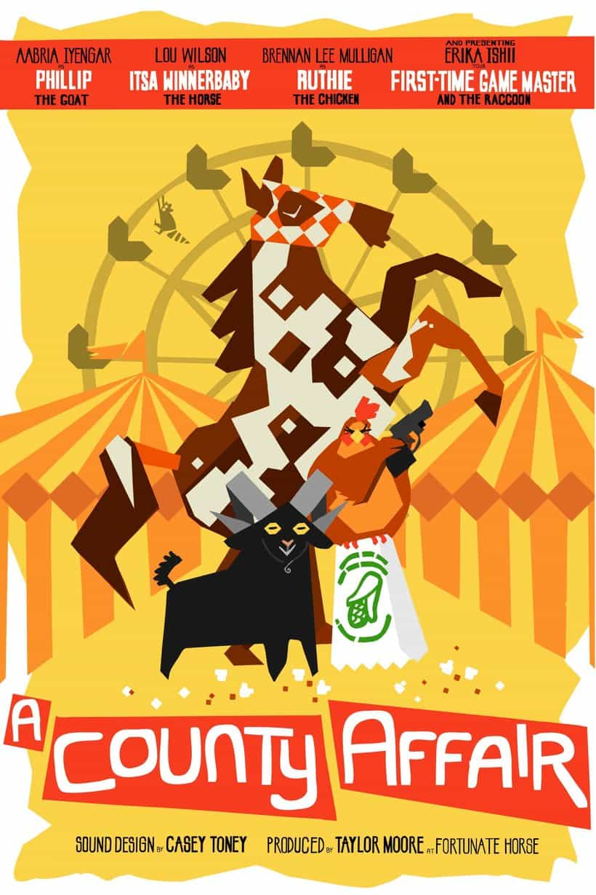

Official art by Meg Lloyd
A County Affair
A crew of farm animals will come together to perform one last heist: the Family Farms Inc. kettle corn truck. This two-part story uses the Roll for Shoes system by DWeird.
It first premiered on June 29, 2023, and ended two weeks later on July 13. It was exclusive on the Patreon until its public release September 12, 2023.